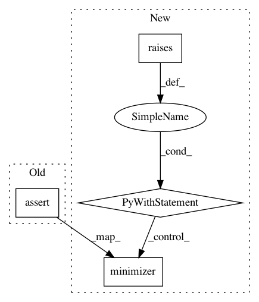

092ca44b4694f17983b095bf2fca9eb82a1c418a,skopt/tests/test_common.py,,test_invalid_n_calls_arguments,#Any#,326
Before Change
n_calls=0,
random_state=1)
assert_raise_message(ValueError,
"set `n_random_starts` > 0, or provide `x0`",
minimizer,
branin, [(-5.0, 10.0), (0.0, 15.0)],
n_random_starts=0,
random_state=1)
// n_calls >= n_random_starts
assert_raise_message(ValueError,
"Expected `n_calls` >= 10",
After Change
minimizer(branin, [(-5.0, 10.0), (0.0, 15.0)],
n_calls=0, random_state=1)
with pytest.raises(ValueError):
minimizer(branin, [(-5.0, 10.0), (0.0, 15.0)],
n_random_starts=0, random_state=1)
// n_calls >= n_random_starts
with pytest.raises(ValueError):
minimizer(branin, [(-5.0, 10.0), (0.0, 15.0)],
n_calls=1, n_random_starts=10, random_state=1)
In pattern: SUPERPATTERN
Frequency: 3
Non-data size: 4
Instances
Project Name: scikit-optimize/scikit-optimize
Commit Name: 092ca44b4694f17983b095bf2fca9eb82a1c418a
Time: 2020-01-17
Author: holgernahrstaedt@gmx.de
File Name: skopt/tests/test_common.py
Class Name:
Method Name: test_invalid_n_calls_arguments
Project Name: scikit-optimize/scikit-optimize
Commit Name: 092ca44b4694f17983b095bf2fca9eb82a1c418a
Time: 2020-01-17
Author: holgernahrstaedt@gmx.de
File Name: skopt/tests/test_common.py
Class Name:
Method Name: test_consistent_x_iter_dimensions
Project Name: scikit-optimize/scikit-optimize
Commit Name: 092ca44b4694f17983b095bf2fca9eb82a1c418a
Time: 2020-01-17
Author: holgernahrstaedt@gmx.de
File Name: skopt/tests/test_common.py
Class Name:
Method Name: test_minimizer_api